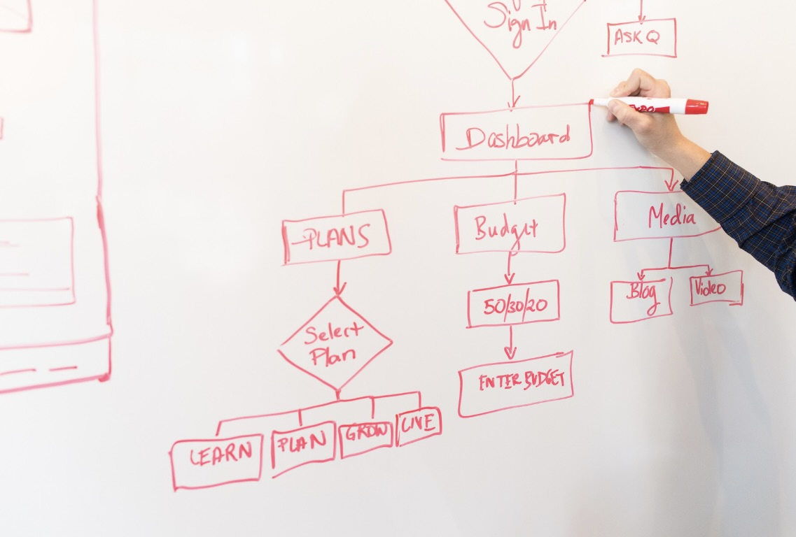

経営分析
会計（税理士）と連携し、収益・費用の収支バランスを分解。診療報酬・自費の構成、コスト構造を見直し、 「どこを伸ばし、どこを締めるか」を数値で可視化します。
- KPI設計（患者数・単価・再診率・キャッシュフロー 等）
- 月次レビュー（外来/部門/医師/曜日別の実績可視化）
- PL改善（売上構成・固定費/変動費の見直し・改善テーマ特定）
- 保険/自費ポートフォリオ設計・粗利改善シミュレーション
Service
事務長代行とは、クリニックに必要な事務長機能を、外部の専門人材が継続的に支援するサービスです。
CTMでは、院長の右腕として現場に入り、経営管理、人事・採用、組織づくり、業務改善、行政対応、集患支援などを実務レベルで支援します。院長が診療と重要な経営判断に集中できる環境を整え、クリニックの継続的な成長と安定した運営を支えます。
CTMの事務長代行は、課題を分析して改善案を提示するだけのサービスではありません。
院長が実現したい医療やクリニックの方向性を確認したうえで、現場の状況を把握し、スタッフや外部の専門家、関係業者などと連携しながら、必要な施策を実行します。
クリニックの課題は、人事、採用、業務改善、組織づくり、経営管理などが相互に関係していることも少なくありません。CTMでは、クリニック全体を俯瞰して課題を整理し、優先順位を付け、現場に合った方法で継続的な改善を進めます。
院長の考えを現場へ伝え、現場の状況を院長へ届ける橋渡し役として、経営と現場の両面からクリニック運営を支援します。
会計（税理士）と連携し、収益・費用の収支バランスを分解。診療報酬・自費の構成、コスト構造を見直し、 「どこを伸ばし、どこを締めるか」を数値で可視化します。
採用から評価・定着までの人事サイクルを現場運用と両輪で整えます。労務リスクを抑えつつ人件費と労働時間を最適化。

受付〜診療〜会計までの導線・帳票・オペレーションを見直し、スタッフ負担を軽減。患者さまにもわかりやすい導線に最適化します。
地域特性と競合状況を分析し、来院につながる導線を設計。メッセージ・見せ方を統一し、Web/院内/紹介を連動させます。
事務長代行が必要かどうかは、クリニックの規模だけでは決まりません。院長が抱えている業務や組織の状況、今後目指す方向によって、必要な支援は異なります。
院長が抱えている課題、今後実現したいこと、現在の組織体制や業務状況を確認します。
院内の業務、スタッフの役割、情報共有の方法、既存のルールなどを確認します。
経営、人事、組織、業務などの課題を整理し、優先して取り組む内容を明確にします。
院長やスタッフ、外部専門家、関係業者などと連携し、役割分担を整理しながら必要な改善を進めます。
進捗や実施後の状況を確認し、必要に応じて支援内容や運用方法を見直します。
A．医療経営コンサルティングは、経営分析をもとに、売上改善、増患、集患などの経営施策を検討・提案する支援が中心です。
一方、事務長代行は、院長を支える事務方の責任者として、人事・採用、組織運営、業務改善、院内調整など、クリニック運営に必要な実務を支援します。
CTMでは、経営面の分析や提案だけで終わらず、院長とスタッフの間に入り、課題の整理、役割分担、関係者との調整、進捗管理などを行いながら、施策が現場で実行されるよう支援します。
A．はい。既存の事務長や管理者がいる場合でも、課題の整理、施策の方向付け、進捗管理、複数施設の統括などを支援できます。
現場の事務長が日常の実務を担い、CTMが院長・経営側の方針を現場に合わせて整理しながら、事務長への指示、調整、運営支援を行う形にも対応します。
A．はい。クリニックの課題や現在の体制に応じて、必要な業務に範囲を絞って支援することも可能です。
人事・採用、組織運営、業務改善、行政対応、集患支援などから、優先して取り組む内容を整理し、支援範囲を設定します。
A．すべての実務をCTMが代行するわけではありません。
日常的な院内業務はスタッフが担い、CTMは院長やスタッフと役割を分担しながら、課題の整理、改善の方向付け、業務設計、関係者との調整、進捗管理などを行います。必要な業務については、実務面も含めて個別に支援します。
A．はい。現在の課題や組織体制を確認し、事務長代行が適しているか、どのような支援が必要かを整理します。
常勤事務長の採用、院内での役割分担、外部支援の活用なども含め、クリニックの状況に合った体制を検討します。ご相談時点で契約を前提とするものではありません。
現在抱えている課題や院内の体制をお伺いし、必要な支援内容を整理します。
事務長代行の利用を前提とせず、クリニックの状況に合った進め方をご提案します。
無料相談・お問い合わせ